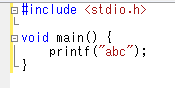
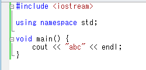
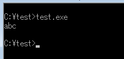
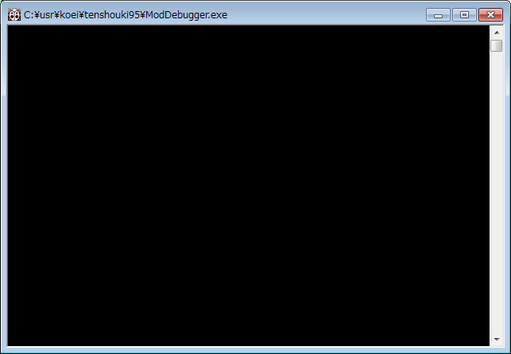
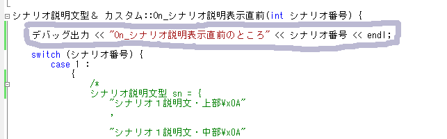
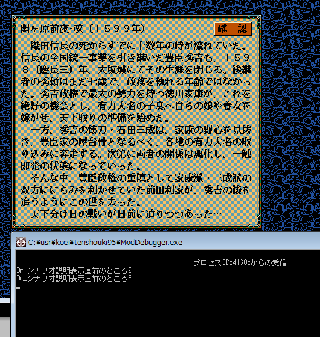
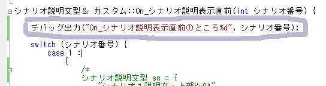

この節では、具体的にScenarioModで、文字列をデバッグコンソールに表示します。
自分自身が組んだプログラムが「正しいのか」「正しくないのか」、
それを検証できるようになるには、 「デバッグ方法」を必ず習得する必要があります。
C言語やC++言語の基礎を学校等や独学で学習した方であれば、
初期の段階でコンソール画面に文字を出力するために、


といった記述を一番初めの段階で学習したと思います。
一番初めの段階で習う理由は、自分が書いたプログラムの挙動を確認する上で、
最も手軽な手段がこれら標準出力へのprint文だからです。

そこで、そういったことを天翔記のデバッグでも可能とするために、
開発ツールとして、「ModDebugger」というものを当サイトでは提供しています。
ModDebuggerの「ModDebugger.exe」を天翔記フォルダに入れておいてください。
さっそく起動してみましょう。

では、さっそくデバッグ出力を使ってみます。
試しに、シナリオ説明文のところを以下の１行を付記してみましょう。
C++の「cout」と同じ書き方です。
シナリオ説明文型＆ カスタム::On_シナリオ説明表示直前(int シナリオ番号) {
デバッグ出力 << "On_シナリオ説明表示直前のところ" << シナリオ番号 << endl;
switch (シナリオ番号) {
case 1:
{
/*
シナリオ説明文型 sn = {
"シナリオ１説明文・上部\x0A"

ビルドして、ScenarioMod.dllを天翔記フォルダーにコピーして、天翔記を実行してみます。
ModDebuggerが起動していることを確認し、
天翔記で特定のシナリオを選択してみましょう。
シナリオ説明文が出るたびに ModDebuggerの方に、以下のような文字列が表示されるはずです。

このような機能を提供するのがModDebuggerです。
これによってプログラムが上手くいかない時や、関数や値のチェックをしたい時に、
直接コンソールに出力することで、確認が取れるようになっています。
さて、もういちど、先ほどの所を以下のように書き換えてみましょう。
こちらは、C言語の「printf」と同じ書き方です。
シナリオ説明文型＆ カスタム::On_シナリオ説明表示直前(int シナリオ番号) {
デバッグ出力("On_シナリオ説明表示直前のところ%d", シナリオ番号);
switch (シナリオ番号) {
case 1:
{
/*
シナリオ説明文型 sn = {
"シナリオ１説明文・上部\x0A"

ビルドして、ScenarioMod.dllを天翔記フォルダーにコピーして、天翔記を実行してみます。
ModDebuggerが起動していることを確認し、
天翔記で特定のシナリオを選択してみましょう。
先ほどと全く同じ文字列が表示されたはずです。
このように、「デバッグ出力」という機能を使えば、
cout と同じ書き方でもよいし、
printf と同じ書き方でもよく、
好きな方で、ModDebuggerのコンソールに出力してデバッグできるということが理解できたことでしょう。
以上で、ModDebuggerとデバッグ出力の説明を終了します。 お疲れ様でした。